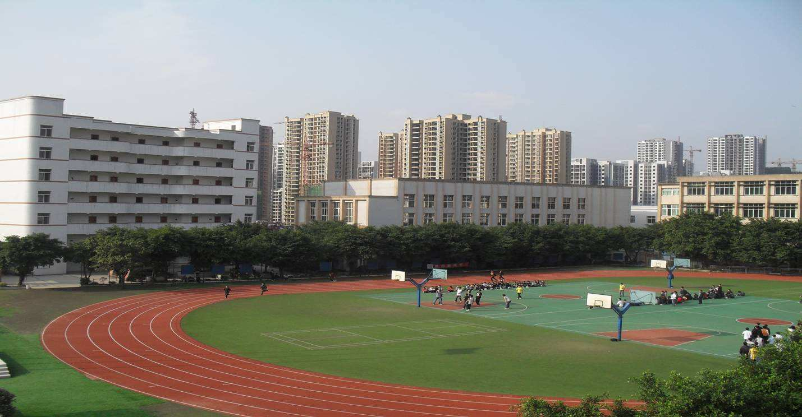

你错失了夏花绚烂，必将会走进秋叶静羌。任何事，任何人，都会成为过去，不要跟它过不去。
- 男
- 天蝎座
- 重庆万盛
- 重庆师范大学
- 15736280659
- 372237266
- everglow
- _dedicate__

未来职业计划
根据自己的兴趣和所学专业，在未来应该会向前端和后台等编程方面发展。围绕这个方面， 本人特对未来几年作初步职业生涯规划如下：
2018-2020(现在-大三)：努力学习、学好专业知识。争取过英语四级，扩展自己的能力，为就业做准备。
2021-2024(大四-工作)：努力找工作并尽量用三年时间适应自己的工作，有时间可以继续学习并提高自己。
2025-以后：努力工作，并不忘多多实践(一切进步都要实践)。
我的母校
这是我初中和高中学习生活的地方，重庆市万盛区进盛实验中学.
重庆市进盛实验中学创建于1945年。经过艰苦卓绝的八年抗战，中华民族取得了伟大胜利。为抗战作出卓越贡献的万盛东林矿业公司，于这年9月，开办了万盛煤矿员工子弟校。既现在的重庆市进盛实验中学.
重庆市万盛区实验学校是一所历史悠久的新名老校，它位于万盛城区勤俭路十八号，东邻万盛区教委、教育服务中心，南邻万盛区房管局家属区，西邻万盛区国资公司开发区，北邻万盛区粮食公司、粮食公司家属区和原万盛区建筑公司家属区。占地面积一万八千三百六十二平方米，建筑面积二万一千九百三十九平方米，有八幢教学大楼及办公大楼、规范的塑胶操场，拥有七百五十五万二千多元的固定资产，是一所花园式学校。
大学介绍
重庆师范大学计算机与 信息科学学院注重人才培养和素质教育。根据我院专业实践性强、与市场结合紧密的特点，通过加强学生实践教学，开展一系列丰富的专业竞赛、学术研讨及校园文化活动，紧跟市场需要提升 学生的创新能力和适应社会的能力，以适应国家信息产业的迅猛发展以及重庆产业结构调整对人才的需求。目前，学院与惠普、富士康、用友等国内外知名IT企业和相关单位建立了多个实习实 训基地，为学生提供了更多的锻炼和就业机会。重庆师范大学计算机与信息科学学院秉承“教学质量立院、学科建设强院、特色发展兴院”的办学理念，不断梳理学科方向、打造学科亮点、搭建 科研平台、凸显专业特色，通过主动服务和融入地方经济与产业发展，大力促进产学研结合，加快人才培养模式创新，不断提升学院的办学实力与办学水平，努力实现学院的跨越式发展。
我的专业：计算机科学与技术（职教师资）
对于选择计算机这个行业，我感觉是我最幸运的选择。